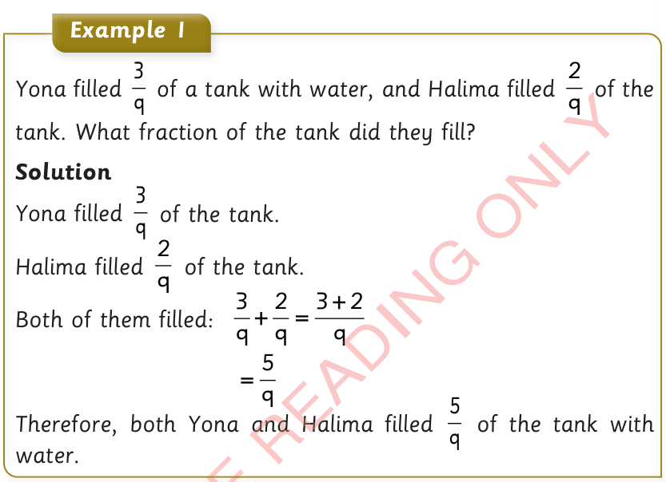
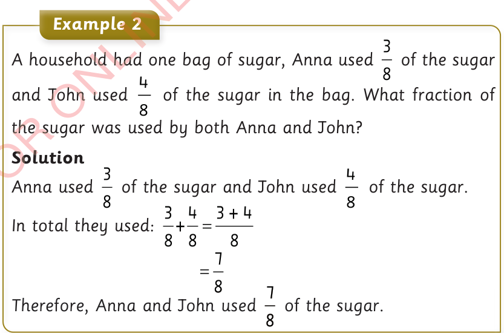

Word problems involving addition of fractions

Example 1
Yona filled of a tank with water, and Halima filled of the tank. What fraction of the tank did they fill?
Solution
Yona filled of the tank.
Halima filled of the tank.
Both of them filled:
Therefore, both Yona and Halima filled of the tank with water.

Example 2
A household had one bag of sugar, Anna used of the sugar and John used of the sugar in the bag. What fraction of the sugar was used by both Anna and John?
Solution
Anna used of the sugar and John used of the sugar.
In total they used:
Therefore, Anna and John used of the sugar.